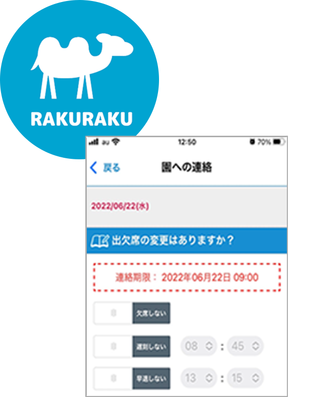

当園と保護者様をつなぐ、コミュニケーションアプリを導入しています。保護者様には、園からのお知らせがスマートフォンに「プッシュ通知」として届き、確認することができます。
保護者様からは園に遅刻、早退、欠席、延長保育の申請、園バスの乗車キャンセルといった連絡が簡単にアプリのボタン操作で送ることができます。
又、幼稚園への連絡事項を伝えていただくこともできます。
保護者様はICカードを端末にタッチすることで登降園時間をスムーズに申請できます。
当園で運営している「Instagram」の投稿と、プロのカメラマンが撮影した写真を閲覧・購入できる「はいチーズ！フォト」により保護者様はお子様の成長を見守り記録いただけます。
公開アカウントの他に在園保護者様限定で閲覧できる非公開アカウントを用意しております。非公開アカウントでは園児が描いた絵の作品等を投稿しており、Instagramを通して幼稚園でのお子様の成長を日々見守っていただけます。
プロのカメラマンが撮影を行い、子ども達の元気な姿をカメラに収めます。写真は専用サイトから閲覧・購入が可能です。